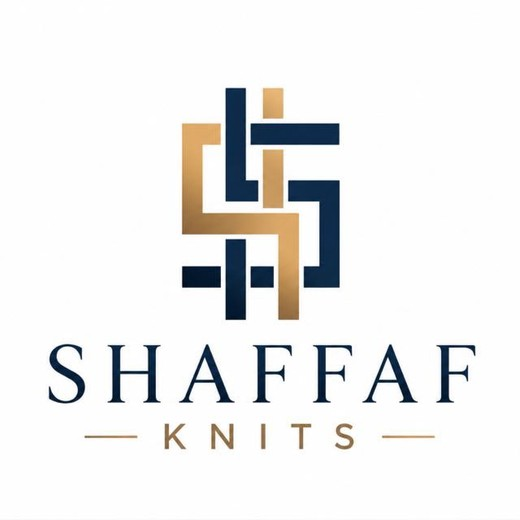

Make your mark
Explore knitted graphics and branding inspired by your design.
Shaffaf Knits is a socks manufacturer and exporter based in Lahore, Pakistan. We work with brands, sports teams and wholesale buyers, from everyday low cuts to football socks and custom crests.
Every project starts with a conversation about your design, quantity and timeline. Our development process includes a sample for approval before bulk production.

From thread to possibility.Your brand. Our craft.
Explore knitted graphics and branding inspired by your design.
From understated low cuts to statement crew and football styles.
Discuss yarn, sizing, cushioning and packaging for your project.
OEKO-TEX® certified. ISO certified.


Three steps, from the first conversation to a confirmed order.
Send your artwork, reference images, intended use and estimated quantity.
Discuss construction, colours, sizes and sample requirements with our team.
Confirm the specification, quotation and production timeline for your order.
Share your artwork, intended use and estimated quantity. We will take it from there.